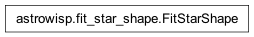

astrowisp.fit_star_shape module
Class Inheritance Diagram
Define the FitStarShape, which performs PSF/PRF fitting.
- class astrowisp.fit_star_shape.FitStarShape(*, mode, grid, initial_aperture, **other_configuration)[source]
Bases:
objectFit for the PSF/PRF of stars and their flux.
The PSF and PRF describe the distribution of light from a point source at infinity on the imaging device pixels.
PSF is the distribution of light produced by the optical system in the plane of the detector for a point source at infinity.
PRF is the response of a detector pixel at some offset from the center of the source. That is, the PRF is the PSF convolved with the sensitivity of detector pixels.
Both representations use a general piece-wise polynomial model in which the area around the source location is split into a rectangular, but in general irregular, grid of cells. Over each cell the PSF/PRF is modeled as a bi-cubic polynomial. The resulting function is constraned to have continuous values, first order derivatives and x-y cross-derivative across cell boundaries. Further, it’s value, first derivative and the x-y cross derivative are contsrainted to go to zero on the outside boundaries of the grid.
- _library_psf_fitter
The library object for carrying out PSF/PRF fitting.
- _library_configuration
Library configuration object set per the current
configuration
- _result_tree
The IOTree instance containing the last fittintg results, on None, if no fitting has been performed yet.
- configuration
The configuraiton for how to carry out PSF/PRF fitting. The following keys are used (others are ignored by this class):
- mode (str):
What kind of fitting to do ‘PSF’ or ‘PRF’ (case insensitive).
- grid (list of floats):
A comma separated list of grid boundaries. Can either be a single list, in which case it is used for both the horizontal and vertical boundaries. If different splitting is desired in the two directions, two lists should be supplied separated by
;. The first list should contain the vertical (x) boundaries and the second list gives the horizontal (y) ones. Sometimes it is desirable to treat the PSF as a uniform distribution of light over pixels. This is accomplished by setting a grid with just outer boundaries (e.g.-5,5) which automatically makes the PSF equal to zero everywhere, leaving only the background (i.e. flat light distribution). If such a grid is set, this also changes how stars excluded from shape fitting are treated. Normally, the fluxes of these stars are fit after the shape is determined using the “good” stars, but if zero PSF model is used, any sources excluded from the shape fit through the other configurations have their flux set to NaN to exclude them from further processing. If you want to keep all sources with zero PSF model, then make sure none are excluded from shape fitting.- initial_aperture (float):
This aperture is used to derive an initial guess for the amplitudes of sources when fitting for a piecewise bicubic PSF model by doing aperture photometry assuming a perfectly flat PSF.
- subpixmap (2D numpy array):
The sub-pixel map, for PSF fitting only.
- smoothing (float):
How much smoothing penalty to impose when fitting the PSF.
Nonefor no smoothing. Value can be both positive and negative and will always result in smoothing (less for negative values).- max_chi2 (float):
The value of the reduced chi squared above which sources are excluded from the fit. This can indicate non-point sources or sources for which the location is wrong among ohter things.
- pixel_rejection_threshold (float):
A number defining individual pixels to exclude from the PSF fit. Pixels with fitting residuals (normalized by the standard deviation) bigger than this value are excluded. If zero, no pixels are rejected.
- max_abs_amplitude_change (float):
The absolute root of sum squares tolerance of the source amplitude changes in order to declare the piecewise bicubic PSF fitting converged.
- max_rel_amplitude_change (float):
The relative root of sum squares tolerance of the source amplitude changes in order to declare the piecewise bicubic PSF fitting converged.
- min_convergence_rate (float):
If the rate of convergence falls below this threshold, iterations are stopped. The rate is calculated as the fractional decrease in the difference between the amplitude change and the value when it would stop, as determined by the
max_abs_amplitude_changeandmax_rel_amplitude_changeattributes.- max_iterations (int):
No more than this number if iterations will be performed. If convergence is not achieved before then, the latest estimates are output and an exception is thrown. A negative value allows infinite iterations. A value of zero, along with an initial guess for the PSF causes only the amplitudes to be fit for PSF fitting photometry with a known PSF. It is an error to pass a value of zero for this option and not specify and initial guess for the PSF.
- gain (float):
The gain in electrons per ADU to assume for the input images.
- cover_grid (bool):
If this option is true, all pixels that at least partially overlap with the grid are assigned to the corresponding source. This option is ignored for sdk PSF models.
- src_min_signal_to_noise (float):
How far above the background (in units of RMS) should pixels be to still be considered part of a source. Ignored if the piecewise bibucic PSF grid is used to select source pixels (cover-bicubic-grid option).
- src_max_aperture (float):
If this option has a positive value, pixels are assigned to sources in circular apertures (the smallest such that all pixels that pass the signal to noise cut are still assigned to the source). If an aperture larger than this value is required, an exception is thrown.
- src_max_sat_frac (float):
If more than this fraction of the pixels assigned to a source are saturated, the source is excluded from the fit.
- src_min_pix (int):
The minimum number of pixels that must be assigned to a source in order to include the source is the PSF fit.
- src_max_pix (int):
The maximum number of pixels that car be assigned to a source before excluding the source from the PSF fit.
- src_max_count (int):
The maximum number of sources to include in the fit for the PSF shape. The rest of the sources get their amplitudes fit and are used to determine the overlaps. Sources are ranked according to the sum of (background excess)^2/(pixel variance+background variance) of their individual non-saturated pixels.
- bg_min_pix (int):
The minimum number of pixels a background estimate must be based on in order to include the source in shape fitting.
- magnitude_1adu (float):
The magnitude that corresponds to a flux of 1ADU.
- Type:
Example
Create and configure a PRF fitting object, allowing up to third order dependence on image position, on a grid which splits the area around the source in 16 squares of 2pix by 2pix size each and using an aperture with 5 pixel radius for the initial estimate of source amplitudes:
>>> from astrowisp import FitStarShape >>> fitprf = FitStarShape(mode='prf', >>> grid=[-4.0, -2.0, 0.0, 2.0, 4.0], >>> initial_aperture=5.0)
- __del__()[source]
Destroy the configuration object created in
__init__().
- __init__(*, mode, grid, initial_aperture, **other_configuration)[source]
Set-up an object ready to perform PSF/PRF fitting.
- Parameters:
by (All the configuration attributes of the class can be configured) –
arguments. (passing them as keyword) –
- Returns:
None
- static _format_config(param_value)[source]
Format config param for passing to AstroWISP PSF fitting lib.
- configure(**configuration)[source]
Modify the currently defined configuration.
- Parameters:
**configuration – See
configuration.- Returns:
None
- fit(image_sources, backgrounds, require_convergence=True)[source]
Fit for the shape of the sources in a collection of imeges.
- Parameters:
image_sources ([5-tuples]) –
Each entry consists of:
The pixel values of the calibratred image
The error estimates of the pixel values
Mask flags of the pixel values.
Sources to process, defining at least the following quantities in a dictionary:
ID (string): some unique identifier for the source
x (float): The x coordinate of the source center in pixels
y (float): See
x
May also define enabled to flag only some sources for inclusion in the shape fit.
The source list can be either a numyy record array with field names as keys or a dictionary with field names as keys and 1-D numpy arrays of identical lengths as values.
List of the terms on which PSF parameters are allowed to depend on.
backgrounds ([BackgroundExtractor]) – The measured backgrounds under the sources.
require_convergence (bool) – If set to False, even non-converged fits are saved. If True, an exception is raised.
- Returns:
A SubPixPhot IO tree containing all the newly derived results.
- Return type: